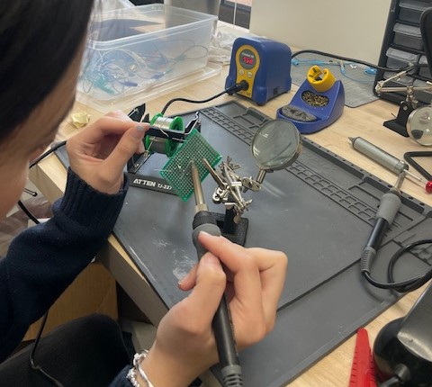
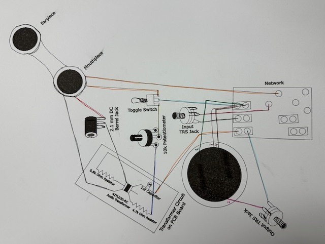
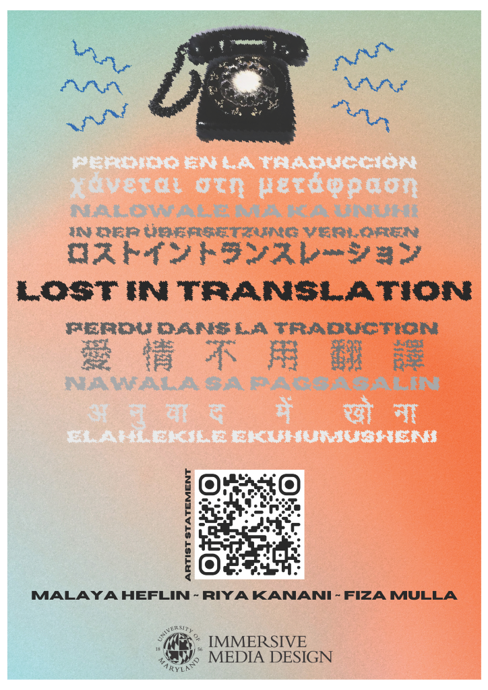
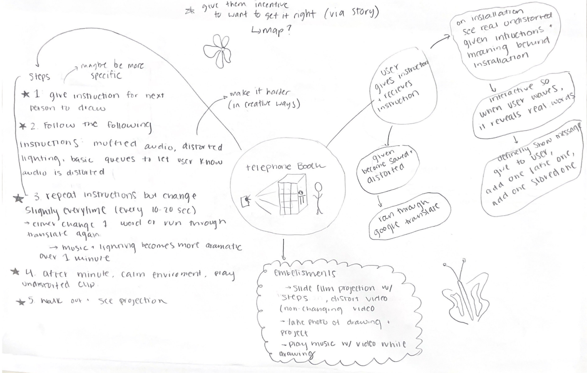

Riya Kanani - Programmer
Fiza Mulla - Artist
Tools: Python, Circuitry, Google Translate API
"Lost in Translation" works through speech-to-text functions and the integration of the Google Translate API. To emphasize the challenges that communication can bring, we translated participant's speech to other languages and then back to English. The rotary phone was thrifted, taken apart, and rebuilt with a new circuit to reroute its input/output.
This is a play on the frustrating human experience of trying to receive help from corporate AI phone systems, where our exhibition now flips the roles between robot and human. We hope to relay the confusion that miscounnication can bring, particularly in the space of technology, but also relating to the experiences of immigrants from foreign countries. By utilizing speech recognition, language translation, and the words from previous participants, each experience is unique and different from the last.
- Write main code script that takes in user speech and generates speech reply
- Implement mechanic that saves past user input to present to future participants
- Design poster in Adobe Photoshop, and create project website with HTML and CSS
- Solder and build new circuit to repurpose rotary phone
- Construct phonebooth and draw inside map
- Plan with concept bubble diagrams, project timelines, etc.
- Present project pitch and playtest to receive feedback
- Facilitate public showcase